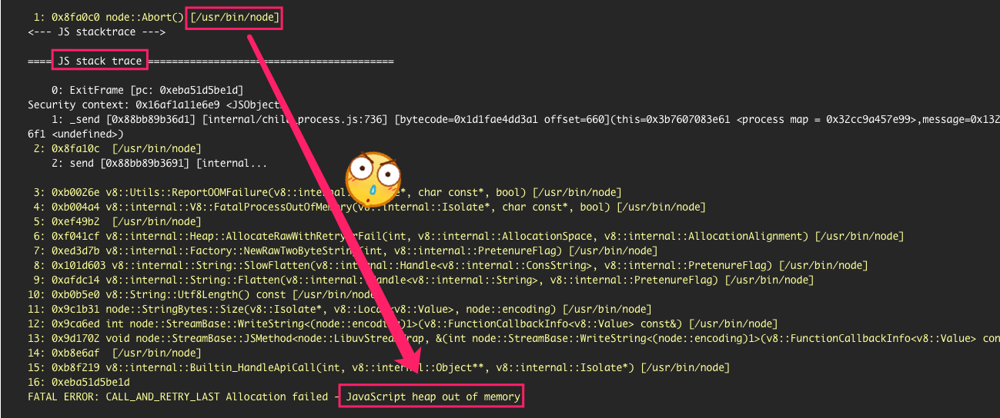

这里主要是为了记录在使用前端的时候遇到的问题及其处理解决方法。。
有时候，看到用户的反馈，我们往往会一脸茫然，因为反馈的信息太少了。如何精准的定位 Bug 以及处理 Bug 呢？这就成为我们必须要经历的事情了！
1. NodeJS 编译内存限制
- [问题起因] 在前端编译的时候，
CI一直没有完成，原本只需要几分钟的事情，硬是二十分钟都没有完成。上去看了下日志，发现了如下所示的报错信息。

- [解决方式] 查了下，发现当所需要执行的应用程序在编译的过程中，如果分配的内存小于运行应用程序时所需的内存时，就会发生此错误。而默认情况下，
Node.js的内存限制是512 MB，为了解决这个问题，我们需要使用--max-old space-size参数来增加内存限制，可以避免内存限制问题。想想，现在的前端编译都，几个G几个G的跑了吗？尴尬！
# 编译的时候指定参数增加内存使用
$ node --max-old-space-size=1024 index.js # increase to 1gb
$ node --max-old-space-size=2048 index.js # increase to 2gb
$ node --max-old-space-size=3072 index.js # increase to 3gb
$ node --max-old-space-size=4096 index.js # increase to 4gb
# 或者直接在CI里面添加环境变量
NODE_OPTIONS="--max-old-space-size=2048"2. Yarn 工具安装方式
- [问题起因] 前端构建的时候，执行
yarn安装对应软件包依赖的时候，提示如下错误。
$ yarn install
Error: Could not find or load main class install- [解决方式] 后来发现是因为这台服务器的
yarn工具并不是我们日常使用的yarn工的，咳咳咳，服务器上面安装了多个版本的yarn工具，而默认的yarn命令并不是我们需要使用的那个，而是apache对应的那个yarn工具。我们可以指定对应的yarn路径(/usr/share/yarn/bin/yarn)来使用，或者将这个不需要的版本给卸载掉。=> 问题解决出处
# 我们需要使用
$ yarn version
yarn version v1.21.1
info Current version: 0.9.0
question New version:
Done in 5.79s.# Apache的Yarn工具
$ yarn version
Hadoop 2.6.0-cdh5.14.2
Subversion http://github.com/cloudera/hadoop -r 5724a4ad7a27f7af31aa725694d3df09a68bb213
Compiled by jenkins on 2018-03-27T20:40Z
Compiled with protoc 2.5.0
From source with checksum 302899e86485742c090f626a828b28
This command was run using /opt/cloudera/parcels/CDH-5.14.2-1.cdh5.14.2.p0.3/jars/hadoop-common-2.6.0-cdh5.14.2.jar
You have new mail in /var/spool/mail/ci3. Yarn 构建包已存在
- [问题起因] 前端构建的时候，执行
yarn安装对应软件包依赖的时候，提示如下错误。
+ yarn install
yarn install v1.21.1
[1/4] Resolving packages...
[2/4] Fetching packages...
error http://xxx.xxx.com:xxx/xxx/-/xxx-xxx.xx.0.tgz: "EEXIST: file already exists ..."
......
info Visit https://yarnpkg.com/en/docs/cli/install for documentation about this command.
warning xxx-xxx@2.0.0: Invalid bin field for "xxx-xxx".
[go] Task status: failed, took: 12.984s, exited: 1- [解决方式] 上面提示的原因，主要是因为本地的缓存包和需要下载的包，有冲突。执行下面三板斧，即可解决！
# 删除缓存
$ yarn cache clean
# 删除本地下载的依赖
$ rm -rf node_modules
# 再次构建
yarn install